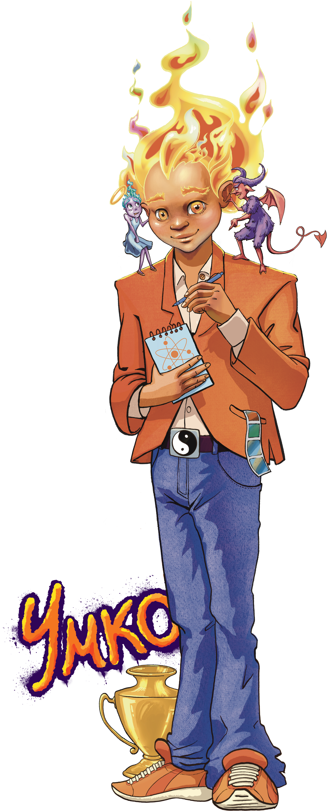
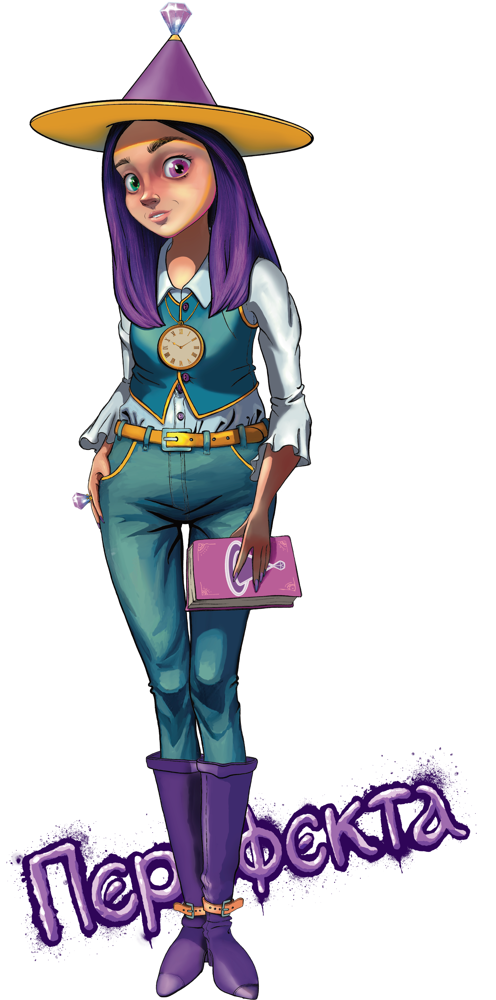

Домът e, там където...
Интелекти
„Аз синтезирам електрическите енергии. Аз познавам и управлявам Атома."

- Интелект
- Интеграция и баланс
- Ентусиазъм
- Наука
Интелекти

Умко е въплъщение на знанието и интелекта. Косата му е вечно горящ пламък, който променя цвета си според настроението му. Той винаги носи тефтер със себе си, където записва добрините, които среща. Отличава се със своята логика, уравновесеност и любознателност. Умко вярва, че умът е най-голямата сила и че знанието трябва да бъде споделяно.
Идеали
„Аз отивам отвъд и се отдавам на Същността."

- Идеализъм
- Служене
- Отдаденост
- Справедливост
Идеали

Близнаците Иде и Али олицетворяват идеализма и справедливостта. Те винаги се стремят към баланс, помагат на другите и защитават истината. Те вярват, че доброто трябва да се отстоява, а техният живот е посветен на това да правят света по-добро място.
Дипломати
„Аз трансформирам себе си в Перфектност."

- Трансформация
- Ред
- Дипломатичност
- Стремеж към съвършенство
Дипломати

Перфекта (или Баба Яга преди трансформацията) не е злата вещица от приказките, а символ на трансформацията. Нейната история е разказ за промяната – от самотна и неразбрана, тя намира пътя си към хармонията и осъзнаването на своята вътрешна сила. В дома на Дипломатите тя е вдъхновение за тези, които искат да постигнат съвършенство чрез дисциплина и вътрешна мъдрост.